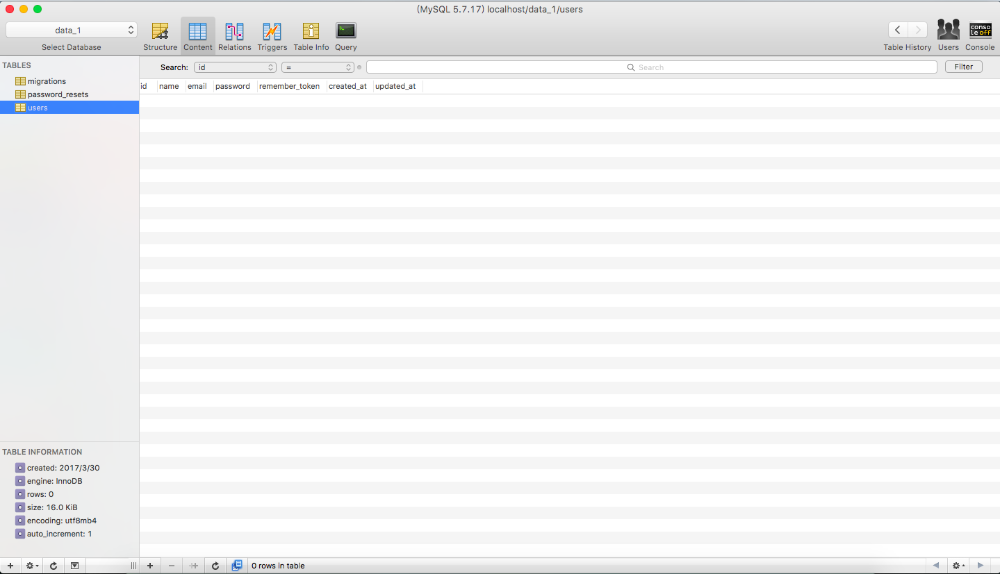

Laravel「2.0-Migrations」
背景
现在我们的开发 -> 测试 -> 线上 环境的SQL脚本，都是通过手动拷贝SQL，然后交由DBA手动执行；
这样会存在一些问题
- 我们忘记记录SQL，上线直接报错
- DBA不在，我们不能执行SQL
- 执行之后，SQL不能回滚
- 新成员加入，不能直接生成表结构和初始化数据
Laravel解决方案:Migrations
用PHP生成表结构，统一入口，生成表的变动记录，方便回滚
步骤1:
//新增表结构
php artisan make:migration create_users_table --create=users
//修改表结构
php artisan make:migration add_votes_to_users_table --table=users
步骤2:
//create_users_table.php
<?php
use Illuminate\Support\Facades\Schema;
use Illuminate\Database\Schema\Blueprint;
use Illuminate\Database\Migrations\Migration;
class CreateUsersTable extends Migration
{
/**
* Run the migrations.
*
* @return void
*/
public function up()
{
Schema::create('users', function (Blueprint $table) {
$table->increments('id');
$table->string('name');
$table->string('email')->unique();
$table->string('password');
$table->rememberToken();
$table->timestamps();
});
}
/**
* Reverse the migrations.
*
* @return void
*/
public function down()
{
Schema::dropIfExists('users');
}
}
步骤3:
//配置.env文件的mysql配置
php artisan migrate
//1.新成员直接一句命令，数据库就已经生成好了；
//2.上线不用手动执行SQL，脚本更新完代码之后自动执行命令，生成表结构

步骤4:
//回滚上一次的数据库操作
php aritsan migrate:rollback --step=1
More Documents: https://laravel.com/docs/5.4/migrations